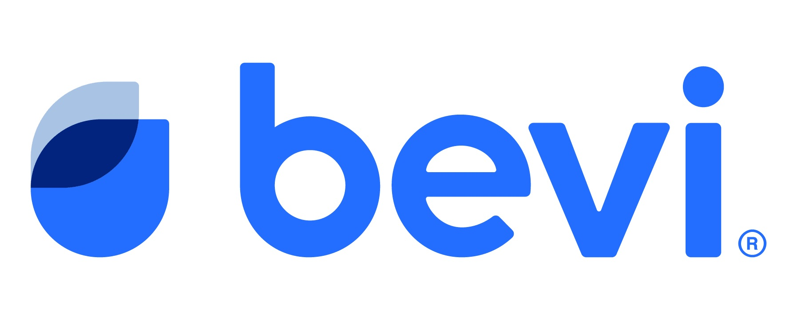
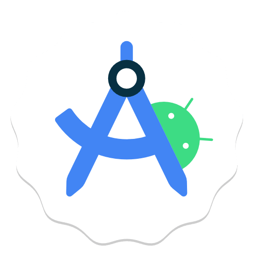
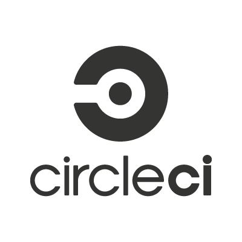

Sean Behan's CS Career
Aspiring Software Systems Engineer
My Industry Experience

Core Skills



My Projects
EuroTour
Smarter Travel, Stronger Insights, One Europe.
What is EuroTour?
While abundant public data exists on road quality, GDP, tourism metrics, and regional factors, no single platform connects these insights meaningfully. EuroTour changes that by synthesizing complex datasets through machine learning algorithms, delivering personalized experiences for each user persona. Travelers discover optimized travel destinations and personalized attractions. Tourism Directors use predictive analytics and multi-factor analysis to guide tourism policy. Researchers analyze validated visualizations to conduct comparative studies and publish findings within the academic community. From aspiring tourists to national officials to academic professionals, EuroTour transforms scattered statistics into actionable intelligence.
View GitHub View BlogRouteReady
Your complete hiking companion for discovering and planning outdoor adventures.
What is RouteReady?
RouteReady is a comprehensive hiking platform designed to make outdoor adventures accessible, safe, and enjoyable for everyone. Browse thousands of hiking trails with detailed information, difficulty ratings, and user reviews. Record completed hikes, track your achievements, and build your personal hiking portfolio over time. Get accurate weather predictions for your planned hikes to ensure safe and enjoyable trips.
View GitHubSanguine
Two players. One board. No mercy.
What is Sanguine?
Sanguine is a two player card game where you place cards on a board to control cells and increase your points for the row. Based on Queen's Blood from Final Fantasy, the game logic is separated from the view making it easy to test and change. Two players take turns placing cards, each affecting nearby cells based on its influence pattern. Whoever has the highest card values in each row wins points from that row.
View GitHubPowerLine
Wire it. Power it. Solve it.
What is PowerLine?
PowerLine is a puzzle game where you manipulate a grid of tiles, rotating and rearranging them to form unbroken electrical pathways connecting power sources to their endpoints. You also need to strategically reposition power supplies across the grid to ensure electricity reaches every target. With each level the grid grows more complex, demanding careful planning to untangle overlapping paths and fully power the board.
View GitHub(GitHub repo is private by default. Contact me if you would like to view the repo)
Connections
The obvious answer is never the right one.
What is Connections?
Connections is a word puzzle game where you sort 16 words into four groups of four, each sharing a hidden common thread. The words are carefully chosen to mislead you — a word may look like it belongs in one group when it fits somewhere else entirely. You only get four mistakes before the game ends. The four groups are color coded by difficulty, from straightforward yellow to the notoriously tricky purple.
View GitHub(GitHub repo is private by default. Contact me if you would like to view the repo)
Rundown
Train. Track. Recover.
What is Rundown?
Rundown is an AI powered training companion for runners and athletes. It generates personalized daily training plans, syncs with Strava to automatically track completed workouts, and delivers nightly coaching feedback based on what you actually did versus what you planned. Built with React Native, Supabase, and the Claude API, it gives athletes the kind of intelligent, adaptive coaching that used to require a human coach.
View GitHubHow is AI involved?
AI has genuinely changed how I work as a developer. At my co-op at Bevi, I use it to accelerate understanding of unfamiliar code, pressure-test my own approaches before implementing them, and compress the feedback loop on debugging. On the project side, building Rundown would have taken me twice as long without it. I came in knowing Java but React Native, Supabase Edge Functions, and OAuth flows were all new territory. AI let me learn by doing instead of learning by reading docs for hours before writing a single line. The key thing I've figured out is that it works best as a thinking partner, not an answer machine. When I explain my problem and reasoning first, I actually understand what comes back. That habit has made me a sharper engineer overall.
Where am I headed?
I'm drawn toward companies at the intersection of endurance sports and technology like Strava, Garmin, Coros, New Balance, Hoka, and similar brands building the tools that serious athletes actually depend on. What I want to bring to those environments is a combination of strong software engineering fundamentals and a genuine understanding of how AI fits into a modern development workflow. I'm a competitive distance runner myself, so I'm not just building for users I've read about. I understand the product from the inside.
Adapting to a dynamic world
The pace of change in software development isn't slowing down, and I've stopped trying to keep up with every tool and started focusing on how to learn fast in any environment. Between picking up React Native mid-project, integrating APIs I'd never touched, and navigating a professional codebase at my co-op with minimal hand-holding, I've gotten comfortable with the uncomfortable. Adapting quickly isn't a skill I'm developing, it's already how I work.